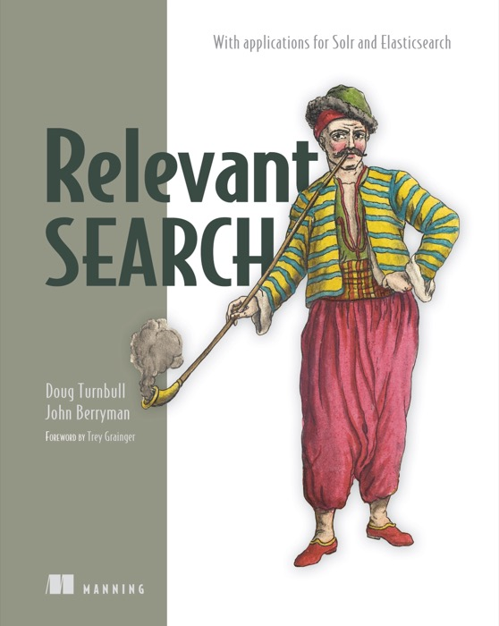

Your experts are wasting time on routine tasks.
41% of the working day
Desk workers in Slack’s survey said that 41% of their working day went to tasks that were “low value, repetitive or lack meaningful contribution to their core job functions.”
Business workflows
Turn your experts’ processes into AI-assisted workflows.
Graduate dependable tasks to full automation. Iterate and continuously improve.
The problem
41% of the working day
Desk workers in Slack’s survey said that 41% of their working day went to tasks that were “low value, repetitive or lack meaningful contribution to their core job functions.”
4.9 hours per week.
Knowledge workers estimated better processes could save them 4.9 hours per week. Asana’s survey found 58% of time went to “work about work.”
60–70% of employee time
McKinsey estimated that generative AI and other technologies could automate activities occupying 60–70% of employees’ time.
McKinsey Global Institute · technical automation potential · 2023
“The answer looked good to me, but I wasn't a financial advisor, so I didn't actually know if it was useful.”
Kaitlin Elliott, Morgan Stanley · Human in the Loop interview
Models, tools, and approaches change. How do you keep your workflows up to date while assuring they remain dependable?
The solution
Look for valuable, repeatable tasks with outcomes your experts can check. Watch how employees already use AI, then capture the most promising processes as agent skills.
Let agents perform research, make the easy decisions, and prepare drafts. Give experts the sources, findings, and open questions they need to review the work instead of doing it all from scratch.
Capture expert corrections, classify and catalogue tasks, and fully automate tasks that are determined to be low-risk and highly dependable.
Extract evaluation benchmarks from your experts’ daily work. When models, tools, or approaches change, rerun the benchmarks to ensure workflow quality stays on track.
From possibility to product
Product direction. AI behavior. Agentic engineering.

“Arcturus Labs took a complex, email-driven process and turned it into a systematic, AI automated workflow. And the research agent cut through the noise of hospital shortages, and was able to identify substitutes in a fraction of the time it would take staff.”
“Building a multi-agent therapist training simulator from scratch is a massive undertaking. Arcturus Labs provided the foundational architecture, a sophisticated strategy, and hands-on work that gave us the ability to train and refine our Patient, Coach, and Evaluator agents into a reliable, evidence-based training platform.”
“The strategic assessment from Arcturus Labs was a turning point for our product. By implementing their 'participatory experience' model, we are empowering our users to guide the AI, leading to higher confidence and much better data outcomes.”
“If you have the chance to bring him in for a training with your team then I would definitely recommend it and I know my colleagues would too.”